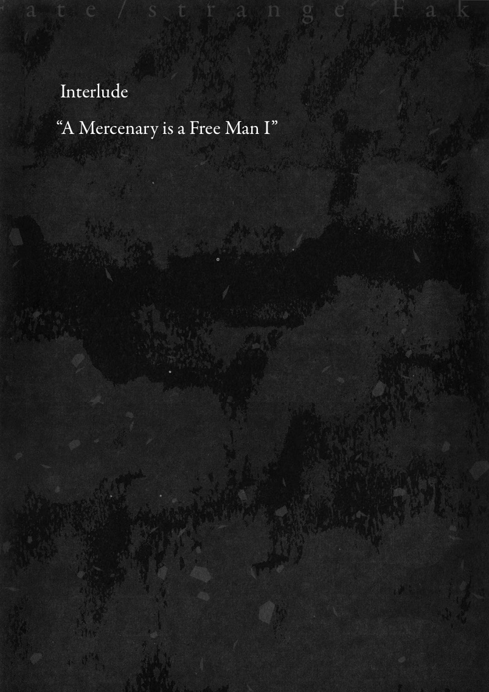

Como eu faço tudo certinho?
Papai e mamãe estão sorrindo para mim.
"Você não consegue me ouvir?
Zheng percebeu na hora... Mas talvez os humanos mudem em dois mil anos."
O que eu posso fazer para eles continuarem sorrindo para sempre e sempre?
Será que eles vão ficar comigo?
"Talvez você não entenda a minha língua?"
Estou com medo.
Estou com medo.
"Olá, menina.
Zaoshanghao, nühai.
Ohayō? Musume-san?
Bonjour?
Chào buổi sáng."
. . .?
"Você. Está. Bem? . . .
O que quer dizer 'bem'?
Sou um tolo.
Há um limite para as línguas que consigo aprender com os documentos desta sala. . . .
Esta é a minha única chance, agora que 'ele' está distraído, mas..."
. . .
Quem está aí? . . .
Sr. Escuro?
"!
Você me notou!
Obrigado, senhorita!"
". . .?"
A garota despertou do cochilo.
Tendo acordado dentro do mundo dos sonhos, olhou ao redor do sofá falso naquela casa falsa, mas não havia ninguém à vista.
Ela conseguia ver o pai e a mãe conversando no jardim, mas não havia sinal de mais ninguém, e também não via "Sr. Escuro" em lugar algum.
Apesar da pouca idade, a menina percebeu que devia estar sonhando e já ia correr até os pais para aliviar a própria inquietação, quando . . .
". . .
Olá, garota que vaga pelos sonhos."
"?"
Uma voz perfeitamente audível fez Tsubaki parar.
"Não tenha medo; não vou machucá-la, nem ficarei bravo com você."
A voz de alguém que ela não conseguia ver.
Uma garota comum naquela situação talvez já tivesse desatado a chorar de pavor, mas Tsubaki, estranhamente, não sentiu medo daquela voz.
Assim como quando conhecera "Sr. Escuro" pela primeira vez . . . ela tinha uma estranha certeza de que aquela voz estava do seu lado.
Com "Sr. Escuro" - Pale Rider -, seus instintos de maga, até então adormecidos, haviam lhe dito que o Espírito Heroico era "uma parte ligada a ela".
Desta vez, algo como o calor que ela sentia na própria voz fez com que seus instintos humanos aceitassem o dono da voz como "algo ao lado do qual ela podia se sentir segura".
"Quem é você? Eu sou Kuruoka Tsubaki", perguntou Tsubaki, exatamente como fizera quando conheceu Pale Rider, e o "ser" de voz bela e andrógina explicou calmamente o que era.
"Obrigada, menina. Eu não tenho nome. Tive um há muito tempo, mas o perdi."
"?"
Tsubaki ficou confusa, sem entender o significado daquelas palavras. O "dono da voz" falou de si com serenidade.
"Eu sou... aquilo que um dia foi chamado de 'divindade' em certo lugar."
"Agora, porém, sou apenas um remanescente... um, hum, 'resto', por assim dizer."

O Mundo-Barreira, Residência Kuruoka
Há pouco.
"Oh... ainda bem. Minha filha parece estar em segurança. Está dormindo tranquilamente", afirmou Kuruoka Yūkaku, observando a filha pela janela, do pátio.
Sigma, que o seguira até ali, ponderou a situação.
Assassin havia declarado que investigaria o cachorro gigante de três cabeças e estava agindo sozinha.
Sigma havia seguido Yūkaku, o pai de Tsubaki, para obter mais informações, mas a própria Tsubaki, que era o mais importante, parecia estar tirando um cochilo à tarde, e ele não conseguia descobrir nada de definitivo.
Nesse caso, por que não tento chegar ao cerne da magia dos Kuruoka? A criança chamada Tsubaki deve estar enraizada nela.
"Que tipo de magia você estuda?"
A expressão sumiu do rosto de Kuruoka quando ele respondeu: "Você espera que eu conte isso a um estranho?"
Era exatamente o tipo de resposta que qualquer mago daria. Na Torre do Relógio, dava para saber a direção dos interesses de um mago pela escola a que ele pertencia, e muitos divulgavam suas pesquisas para ganhar influência. Ainda assim, poucos revelavam os detalhes concretos da própria magia. Essa prática não se limitava ao mundo da magia; empresas comuns e pesquisadores faziam o mesmo.
Mesmo assim, Sigma avançou de propósito, para confirmar seu palpite.
"Quero saber para garantir a segurança da Tsubaki."
Não era mentira.
O objetivo atual de Sigma era escapar daquele mundo-barreira, mas, antes de ser mandado para lá, sua missão era acompanhar Assassin e garantir a segurança de Kuruoka Tsubaki.
Ele não sabia que tipo de habilidade aquele Servo negro como breu possuía, mas, se ele tivesse poder para detectar mentiras ou hostilidade, enganar Yūkaku poderia ser fatal.
Mais importante ainda: a pergunta também servia para confirmar uma coisa.
Os olhos de Kuruoka Yūkaku ficaram vidrados por um instante e, após alguns segundos, ele abriu um sorriso plácido.
"Entendo. Se é pela Tsubaki, então acho que não tenho escolha."
Com isso, Sigma teve certeza.
Como pensei, este mundo, inclusive as personalidades das pessoas controladas, existe para proteger sua Mestre. Essa pausa deve ter sido o tempo que o Servo que controla a mente de Kuruoka Yūkaku levou para decidir e guiá-lo.
E provavelmente não é do tipo que desconfia do que eu digo, contanto que eu não minta.
Ele disse que é, ao que tudo indica, uma entidade conceitual ligada à morte e à doença, mas...
Enquanto especulava sobre o Servo que produzira aquele mundo, Sigma se lembrou de Artefatos Místicos dotados de pseudo-personalidades.
Ele já havia tanto lutado contra eles como inimigos quanto atuado ao lado deles para cumprir missões.
Entre os usuários de magia, era particularmente famoso o Artefato Místico de mercúrio líquido em forma de mulher usado pelo herdeiro da família El-Melloi. Em essência, eram como robôs leais que executavam as ordens de seus usuários, mas muitos eram capazes de um pensamento autônomo mais adaptativo do que a IA atual.
Ainda assim, estamos falando de um Servo. Talvez eu devesse presumir que pensa mais como um humano do que o Artefato Místico de mercúrio dos El-Melloi.
. . .
Rezo para que não pense como um mago.
Enquanto mergulhava nesses pensamentos, o próprio rosto de Sigma se parecia com o de um androide sem emoções.
Ele nem percebeu isso enquanto prosseguia, solene, interrogando Yūkaku.
"Em que a magia da sua família é especializada? Quero que me diga se está usando algum tratamento especial na Tsubaki."
"Ah, tratamento . . . Tratamento . . .? Isso mesmo. Claro que estou."
O pai da garota não hesitou em admitir. Começou a explicar antes mesmo que Sigma pudesse fazer uma pergunta complementar.
"Eu... Sim, encontrei um norte."
Um êxtase coloriu a expressão de Yūkaku, apesar do estado de lavagem cerebral.
Suas palavras dirigidas a Sigma vinham carregadas de emoção, como se ele se orgulhasse do que havia realizado.
"Eu não ia superar os Makiri sendo decente. A linhagem deles, na prática, já é uma enxurrada de insetos a essa altura... O uso perfeito que eles fazem de insetos é belo... Mas o meu objetivo era a simbiose com a magia que uso. Uma forma de simbiose mais natural do que insetos parasitas... Diga, quantas bactérias você acha que um corpo humano abriga? Mais de várias centenas de tipos diferentes de bactérias atuam ao lado das células humanas para formar uma forma de vida inteligente. Comparado ao número de bactérias, o número de células humanas chega, no máximo, à metade."
Sigma reconheceu o nome da família Makiri.
Eles eram uma família de magos do Extremo Oriente e uma das três famílias que criaram a Guerra do Santo Graal original.
Ele se lembrou de Francesca ter dito que eles empregavam uma técnica eficiente, porém herética, de implantar Crest Worms e outros insetos em seus corpos e fundi-los aos órgãos internos para criar pseudo-Circuitos Mágicos.
O próprio Sigma tivera outras coisas implantadas em si quando criança, embora nunca insetos, então concluiu que devia ser algo parecido.
Ambos os métodos tinham em comum o fato de que, do ponto de vista de um não mago, eram desumanos.
O mago continuou discorrendo sobre a realização de toda a sua vida, mesmo enquanto o ouvinte permanecia preso às próprias lembranças.
Como mago, ele não tornara aquilo público, mas devia ao menos nutrir o desejo de mostrar ao mundo o que havia feito.
"Eu tremi quando vi aqueles microrganismos que recolhi perto de certas ruínas na América do Sul. Nunca imaginei que alguma bactéria pudesse ser tão compatível, em termos místicos, com os humanos. Não sei se são um remanescente da evolução ocorrida na Era dos Deuses ou se esses microrganismos têm uma origem completamente diferente da das espécies normais da Terra... Não consegui desenvolvê-los do zero, mas consegui modificar aquelas bactérias e adaptá-las à nossa magia."
Pelo que soava, ele havia misturado a magia da família Makiri com microrganismos peculiares descobertos na América do Sul para criar algo que se poderia chamar de "familiar bacteriano".
Também podia ser um vírus, menor ainda do que bactérias, mas o efeito que essa diferença teria saía demais da área de conhecimento de Sigma, então ele decidiu ignorar a questão por ora.
"Fiz os microrganismos que modifiquei com magia entrarem numa relação simbiótica com os Circuitos Mágicos da Tsubaki. Eu não esperava que eles se espalhassem até o cérebro dela, mas os Circuitos Mágicos da Tsubaki mostraram grandes mudanças em apenas uma geração. Você faz ideia do valor que isso tem para a magia?!"
". . .
É verdade."
Os Circuitos Mágicos, fonte do poder dos magos, semelhantes a vasos sanguíneos que fazem circular Energia Mágica, normalmente levavam muitas gerações para se desenvolver. O número de Circuitos Mágicos que um mago possuía era imutável: era possível abrir circuitos adormecidos, mas não adicionar outros.
Com exceção de métodos como a técnica dos Makiri de implantar insetos como circuitos substitutos.
Mas Kuruoka afirmava que tinha conseguido.
Isso é impossível.
"Não, não é."
Foi como se Yūkaku tivesse lido a mente de Sigma.
"Eu não posso dar a ela mais Circuitos Mágicos. Eu alterei a qualidade e a capacidade deles. Os microrganismos que criei despertam automaticamente os Circuitos Mágicos e os utilizam da maneira mais eficiente possível. Tudo para tornar o habitat deles o mais confortável possível."
". . ."
"Como benefício, Tsubaki consegue fazer a Energia Mágica circular pelo corpo com muito mais eficiência do que alguém com o mesmo número de Circuitos Mágicos. Esses Circuitos Mágicos revitalizados devem fazer dela uma excelente mãe no futuro. O número real de Circuitos Mágicos provavelmente aumentará drasticamente na geração dos filhos dela."
Yūkaku soava muito mais como um mago do que quando falara como "pai" antes, mas Sigma pouco se abalou com a mudança.
Ele era um usuário de magia nascido como resultado de experimentos do governo.
Desde criança, fora submetido a inúmeros experimentos sem grande preocupação com sua vida. Ele não conheceu sequer o conceito de direitos humanos até depois da queda do seu país.
Assim, ao ouvir como os pais de Tsubaki a haviam usado como cobaia, Sigma não sentiu nem simpatia por ela nem raiva de Yūkaku.
Mas, embora não sentisse nada, ele continuou pensando e fazendo perguntas.
"Essas bactérias também estão em seus corpos?"
"Sim, mas ainda só em fase de testes. A versão mais recente com que infectamos Tsubaki só cria raízes em crianças pequenas cujos órgãos ainda não se desenvolveram por completo. Foi um inferno calibrar isso. Entramos em pânico quando ela perdeu a consciência, mas foi um alívio saber que a capacidade dela de gerar descendentes estava intacta... Hum . . . Não, Tsubaki está acordada agora... Não é o melhor que poderíamos esperar? Quem se importa com os filhos dela...? Sim, Tsubaki é perfeita..."
Yūkaku foi gradualmente descendo a um murmúrio para si mesmo. Sigma concluiu que ele devia estar confuso pelas contradições entre suas ações passadas e seu estado mental atual.
Se esse era o máximo de confusão a que ele chegava, então ele realmente não devia nutrir sentimentos negativos quanto a fazer experimentos com o corpo da própria filha.
Essa linha de pensamento lembrou Sigma, de repente, dos próprios pais.
Ele nunca tinha visto o rosto deles.
Seu pai jamais fora identificado, e Francesca lhe dissera que sua mãe morrera em um país distante.
Naquela época, ela tinha um corpo de menino e se chamava Francois. Ainda assim, por que Francesca já sabia sobre sua mãe, se mal o conhecera?
Ele havia perguntado a ela, mas: "N-Não entenda errado! Só porque fiquei curiosa sobre a sua ascendência não quer dizer que eu esteja